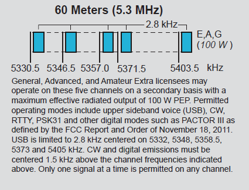

My bad, that is an old file, prior to a change that was made some
years ago. Here is the new band plan (not as clean a copy,
sorry). [Note EIRP is relative to a half wave dipole.]
I'm attaching a a partial image of the band plan issued by the ARRL.
Basically, you set the VFO to the stated frequency (5.357) for USB (!!) phone and digital modes and if digital, you are supposed to use a tone around 1500 Hz so that you are centered in the allotted bandwidth space. Phone is limited to 2.8 kHz bandwidth (no ESSB allowed). Pay attention to the purity of your audio (limit compression for phone, don't overdrive ever) so that your suppressed sidebands aren't excessive below the VFO frequency (proper to do at all times anyway).
In the case of FT8, with a bandwidth of about 60 Hz, (or PSK31, a bit wider) there is a bit of latitude in choice of tones, just avoid any that the width would approach the channel edges (leave a buffer zone) and you should be ok. I set my tones for 1600 Hz, near channel center.
For CW, you add 1.5 kHz to the VFO setting, so that you are centered in the channel.
73,
Rick NK7I

On 3/2/2020 7:36 AM, n6sj@earthlink.net wrote:
Rick, I worked them at 0403Z last evening as well, with my rotatable dipole and 75W. I was in "Hound" mode. Got a +03 and sent a +02. My dipole was at around 25' on top of my nested crank-up due to high winds here. I used the frequency I saw spotted, 5357.8, to call. But now I'm wondering if I violated the NTIA rules about channelization on 60M. I couldn't find standard freqs for FT8. Any suggestions? 73, Steve N6SJ -----Original Message----- From: Chat <chat-bounces@ncdxc.org> On Behalf Of Rick Bates, NK7I via Chat Sent: Sunday, March 1, 2020 11:02 PM To: Chat NCDXC <chat@ncdxc.org>; MLDXCC-Spots@groups.io Subject: [NCDXC Chat] DX Spot: VP8PJ 5357 NOT F/H One call and logged, not busy -3 (them) +03 (me); pretty loud for being QRP ;-) 100 watts rotatable dipole @ 60' Rick NK7I _______________________________________________ Chat mailing list Chat@ncdxc.org http://mail.ncdxc.org/mailman/listinfo/chat_ncdxc.org_._,_._,_
Groups.io Links:You receive all messages sent to this group.
View/Reply Online (#559) | Reply To Group | Reply To Sender | Mute This Topic | New Topic
Your Subscription | Contact Group Owner | Unsubscribe [Rick.NK7I@gmail.com]
_._,_._,_